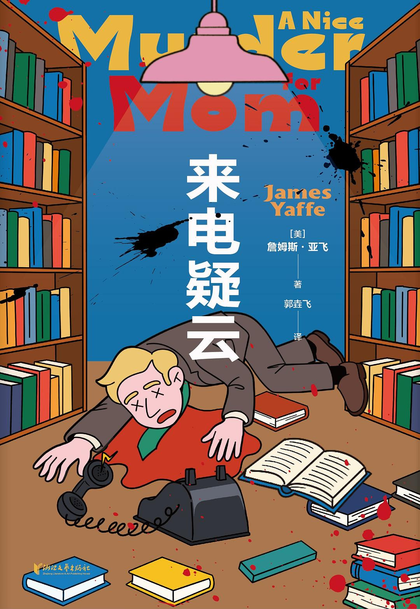
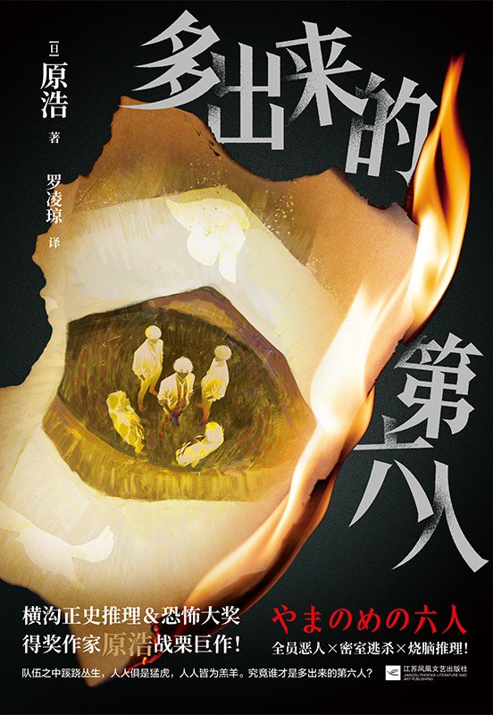

No.01  来电疑云 本周新增 [美] 詹姆斯·亚飞 浙江文艺出版社 2026 8.2（42人评价） 综合分 122.73 AI 推荐：2026年出版，长篇推理小说，作者以推理闻名，符合类别要求。《饭桌追凶》作者詹姆斯·亚飞长篇推理小说国内首次引进出版 工作日也能读的推理小说！ 与阿加莎·克里斯蒂、约翰·迪克森·卡尔、埃勒里·奎因、马克·吐温齐名的美...
No.02  多出来的第六人 本周新增 [日] 原浩 江苏凤凰文艺出版社 2026 5.9（307人评价） 综合分 103.69 AI 推荐：2026年出版，暴风雨夜密室逃生题材，属于悬疑/推理小说范畴。暴风雨之夜，一辆车载着结束“某项任务”的男人们疾驰。即将开上山顶时，车辆卷入泥石流中，伙伴之一当场丧命。幸免于难的五人为了躲雨，逃入附近的宅邸，不料却开启了...
The best recent crime and thrillers – review roundup rss:The Guardian Books · 2026-04-17 · 本周新增 文章回顾了近期最佳犯罪与惊悚小说，包括Tana French的《The Keeper》等作品，聚焦侦探调查、小镇权力斗争和爱尔兰乡村生活变迁。
Douglas Preston and Aletheia Preston on Inventing a New Character rss:CrimeReads · 2026-04-22 · 本周新增 Douglas Preston和Aletheia Preston讨论新惊悚小说《Paradox》中法医侦探Bart Romanski的创作过程，涉及犯罪现场调查和角色塑造。
White Picket Mayhem: 6 Thrillers Set in the Suburbs rss:CrimeReads · 2026-04-22 · 本周新增 推荐6部以郊区为背景的惊悚小说，探讨富裕社区表面下的秘密、人性好奇心和阶级差异带来的叙事张力。
Dane Bahr on Craft and Why Crime Fiction Is the Punk Complement to Literary Fiction rss:CrimeReads · 2026-04-21 · 本周新增 Dane Bahr探讨犯罪小说的创作难度，将其比作文学小说的朋克补充，强调犯罪类型在文学中的独特地位和艺术价值。
The best recent crime and thrillers – review roundup rss:The Guardian Books · 2026-04-17 · 本周新增 精彩摘录：《守护者》塔娜·弗伦奇著；《陌生人的善意》艾玛·加曼著；《沈太太是杀手》姜智英著；《杀手在...
Douglas Preston and Aletheia Preston on Inventing a New Character rss:CrimeReads · 2026-04-22 · 本周新增 精彩摘录：亲爱的犯罪小说读者朋友，关于我们新惊悚小说《悖论》的客座文章，我们决定为您提供一些
White Picket Mayhem: 6 Thrillers Set in the Suburbs rss:CrimeReads · 2026-04-22 · 本周新增 精彩摘录：我们充满好奇，这是人性的一部分。但当涉及他人时，这种好奇就多了一层意味——我们不妨称之为窥探欲。
Dane Bahr on Craft and Why Crime Fiction Is the Punk Complement to Literary Fiction rss:CrimeReads · 2026-04-21 · 本周新增 精彩摘录：“熟能生巧”这句谚语并不适用于写作。